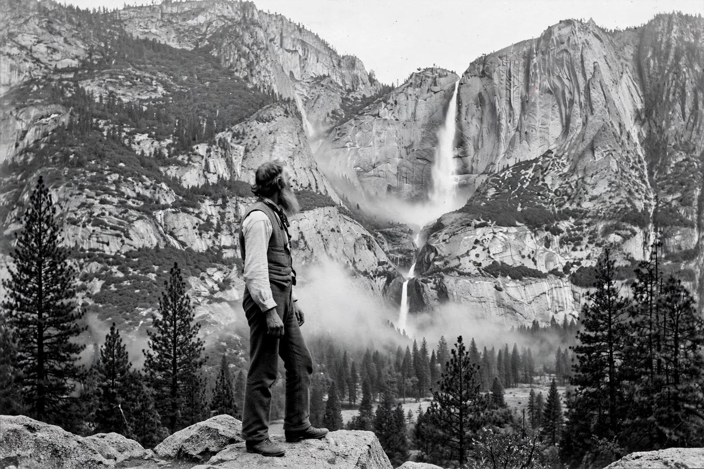

John Muir
| John Muir | |
|---|---|
| Born | 21 April 1838, Dunbar, Scotland |
| Died | 24 December 1914, Los Angeles, California |
| Known for | Yosemite advocacy; Sierra Club co-founder |
| Notable works | My First Summer in the Sierra (1911) |

John Muir (21 April 1838 – 24 December 1914) was a Scottish-born American naturalist, author and advocate whose writings and lobbying helped create the US national park system and the modern Conservation movement. He co-founded the Sierra Club in 1892 and is often called the 'Father of the National Parks'.
Muir's philosophy — that wilderness has spiritual value in itself, not merely as a storehouse of resources — put him on the preservationist side of conservation's founding argument.
Life
Muir emigrated with his family to Wisconsin in 1849, worked as an inventor and mechanic, and after an industrial accident nearly blinded him, resolved to devote himself to nature. He walked a thousand miles from Indiana to the Gulf of Mexico (1867–68), then sailed to California, where the Sierra Nevada — and Yosemite above all — became his life's study. He was among the first to argue that Yosemite Valley was carved by glaciers, against the geological establishment of the day, and he was right.
Campaigns
Muir's magazine articles and personal lobbying — including a famous 1903 camping trip in Yosemite with President Theodore Roosevelt — helped secure Yosemite's transfer to full national park status and inspired the wider park movement. His last great fight, to stop San Francisco damming the Hetch Hetchy Valley inside Yosemite National Park, was lost in 1913, a year before his death; it became a founding parable of environmental activism, proof that even defeats could mobilise a movement. See {L('Environmental_protection')}.
See also: Conservation movement · Environmental protection · Environmentalism · Yosemite National Park